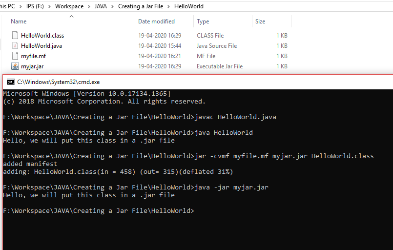

Learning Java
Start Date: 28-Mar-2020
End Date: 27-April-2020(expected)
Java Basics
What is Java ?
- Java is a programming Language.
- Developed by SUN MICROSYSTEMS.
- Built by James Gosling (1991-1995).
- Platform independent language: can be executed on any OS.
How to run a Java program ?
- Write a your code into a text file. * Make sure that file name and class name are same.
- Save it with extension '.java' e.g.
Hello.java - Open command line and go to your file location where 'Hello.java' is saved.
- Compile the code using
javac Hello.java. It will check for errors if any. - If no error, it will generate the bytecode i.e., the .class file.
- Now run
java (file_name)without extension. In our casejava Helloto see the output
How this works?
When we run javac Hello.java, Java compiler
compiles the code and convert it into bytecode. bytecode is something that can be understood
by the machine irrespective of the coding platform. Hence, making Java
platform independent.
Hello World Project
public class HelloWorld {
public static void main(String[] args) {
System.out.println("Hello World");
}
}
Explanation
* In this code HelloWorld is the class name. Hence, file should be saved with name HelloWorld.java only.
It has two KeyWords viz., public and class. They have a specific meaning.
KeyWords: has a specific meaning in any programming language. Java programs are written by following specific rules using these keywords.
The public Java keyword is an access modifier. An access modifier allows us to define the scope or how other parts of our code or even someone else's code can access this code.
The class keyword is used to define a class with the name following the keyword. "HelloWorld" in this case and curly braces { } defines the class block.
Methods: A collection of statements (one or more) that perform an operation. We'll be using a special method called the main method that Java looks for when running a program. It's the entry point of any Java code.
public is an access modifier. static is a keyword. We need to have this to find our method to run the code we are using here.
void is another keyword used to indicate that the method will not return anything more on that later.
Code Block: is used to define a block of code. It's mandatory to have one in a method declaration and it's here where we will be adding statements to perform certain tasks.
Statement: This is a complete command to be executed and can include one or more expressions. Here, below one is an statement:
What is JAR ?
JAR is an acronym for JAVA Archive. JAR = Java Archive
- It is actually compressed format of a compiled Java project(i.e., the .class file).
- Contains .class files + meta data and some other resources.
- Used to distribute java code/libraries for use by other projects.
- .jar files can also be used for direct execution(without any IDE) of java program
How to Create a .jar file from command line?
- Create .java file with class name. Say
HelloWorld.java - Compile the code:
javac HelloWorld.java - Create a new file with extension
.mf. Saymyfile.mf - Inside this
myfile.mffile write:Main-Class: HelloWorld(HelloWorld is the class name). Don't forget to add a new line. - Now run the command
jar -cvmf myfile.mf myjar.jar HelloWorld.class - A file with name myjar.jar will be created.
This .jar file can be transferred and run form any platform
How to run a .jar file ?
- Go to .jar location.
- Type
java -jar filename.jar

- JDK: JAVA Development Kit Environment to develop, compile and run java application
- JRE: JAVA Runtime Environment Environment to run java applications
- JVM: JAVA Virtual Machine Interpreter to execute java programs line by line

What is OOP?
It is a method of programming where code is designed and based on the functions and attributes of the objects.
How did Programming Evolve?
- Non Structured Programming: The developers were create a very linear programme. i.e., no modules in the programme. There were simple programs with all the actions coded within. e.g., Basic, Cobol, Fortran. This kind of programming made it very difficult to maintain and enhance the code. In fact the developers who created the code found it very difficult to read their own code because it has grown so large and so complex; there were no models. The issues with this kind of programming, led to structured programming.
- Structured Programming: Here the code led into structures or modules; and modules could talk to each other. e.g., C, Pascal. This was very successful and coding was very easy and convenient but still, it was felt that for larger enterprise level applications we need something more. The programming should be able to relate real life entities and due to this a new kind of programming methodology was born, which was known as Object Oriented Programming. e.g., C++, Java.